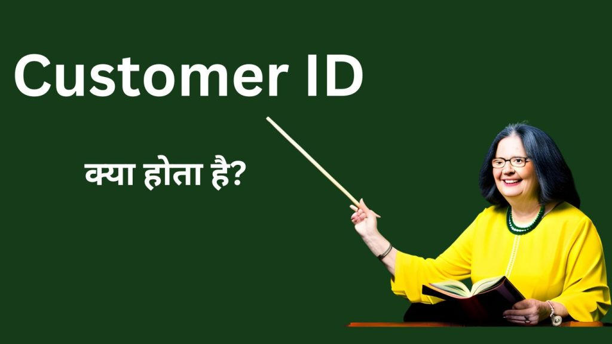

Introduction
Customer ID क्या होता है? यह एक महत्वपूर्ण बैंकिंग पहचान है जो बैंकिंग सेवाओं के उपयोगकर्ता (User) को पहचानने और सुरक्षित रखने के लिए उपयोग होता है। यह एक Unique पहचान है जो बैंक खाता संख्या के साथ जुड़ी होती है और विभिन्न बैंकिंग लेनदेनों को सुनिश्चित(Assured) करने के लिए उपयोग की जाती है। इस लेख में, हम आपको Customer ID के बारे में विस्तृत जानकारी प्रदान करेंगे और बताएंगे कि यह आपके बैंकिंग अनुभव के लिए कितना महत्वपूर्ण है।
Customer ID क्या होता है?
जब आप एक बैंक में खाता खोलते हैं, तो बैंक आपको एक विशेष पहचान नंबर प्रदान करता है, जिसे Customer ID के रूप में जाना जाता है। यह ID Number यूनिक होता है और आपके खाते को अन्य खातों से अलग करने के लिए उपयोग होता है। Customer ID विभिन्न बैंकों और संगठनों द्वारा निर्धारित किया जाता है और यह आपके व्यक्तिगत (Personal) बैंकिंग और वित्तीय लेनदेनों को सुरक्षित रखने में मदद करता है।
- How to Fill a Cheque of Union Bank: Your Step-by-Step Guide
- How to Fill a Cheque of Union Bank: Your Step-by-Step Guide
- Remittance क्या होता है ?Bank में इसका महत्व और लाभ जानिए हिन्दी में।
{kind=link}

Customer ID की प्रमुख विशेषताएँ
Customer ID की कुछ प्रमुख विशेषताएँ निम्नलिखित हैं:
- यूनिक नंबर: Customer ID एक यूनिक नंबर होता है जो आपके खाते को अन्य खातों से अलग करता है। किसी भी संगठन के अंतर्गत आपके पास एक ही Customer ID होती है और वह आपकी पहचान होती है।
- व्यक्तिगतता: Customer ID आपकी व्यक्तिगत (Personal) बैंकिंग जरूरतों की पहचान करने में मदद करती है। जब आप अपने खाते से संबंधित लेनदेन करते हैं, तो आपके Customer ID के द्वारा आपकी पहचान की जांच की जाती है। इससे सुनिश्चित होता है कि केवल आप ही अपने खाते को एक्सेस कर सकते हैं।
- सुरक्षा: Customer ID आपके खाते की सुरक्षा में भी महत्वपूर्ण भूमिका निभाती है। जब आप अपने खाते में Login करते हैं, तो आपको अपना Customer ID प्रदान करना होता है, जिससे सुनिश्चित होता है कि केवल आप ही अपने खाते में प्रवेश कर पाएंगे।
Customer ID का उपयोग
Customer ID बैंकिंग अनुभव में कई महत्वपूर्ण उपयोगों का निर्धारण करता है। नीचे दिए गए हैडिंग्स में हमने कुछ उपयोगों को संक्षेप में बताया है:
1. व्यक्तिगत (Personal) खाता पहचान
अपने Customer ID के द्वारा, आप अपने व्यक्तिगत (Personal) खातों को पहचान सकते हैं। यह आपको अपने खातों की विवरण, संबंधित लेनदेन और बैंकिंग सेवाओं की जानकारी प्रदान करने में मदद करता है।
2. Online बैंकिंग
Customer ID बैंक के Online पोर्टल में Login करने के लिए आपकी पहचान का माध्यम बनता है। यह आपको आपके खातों की स्थिति, लेनदेन विवरण, बैंकिंग सेवाओं की जानकारी और अन्य महत्वपूर्ण जानकारी प्राप्त करने में सहायता करता है।
3. लेनदेनों की जांच
Customer ID के द्वारा आप अपने खातों की लेनदेनों की जांच कर सकते हैं। यह आपको आपके खाते में हुए लेनदेन, जैसे कि जमा, निकासी, भुगतान, और अन्य लेनदेनों की जानकारी प्रदान करता है।
4. सुरक्षित लेनदेन
Customer ID आपके खाते की सुरक्षा में भी महत्वपूर्ण भूमिका निभाती है। जब आप अपने खाते में लेनदेन करते हैं, तो आपको अपना Customer ID प्रदान करना होता है, जिससे सुनिश्चित होता है कि केवल आप ही अपने खाते की पहचान कर सकते हैं।
Customer ID कैसे पता करें?
Customer ID पता करने के लिए आप अपने बैंक की Official वेबसाइट पर Login कर सकते हैं और वहां अपने खाते की जानकारी देख सकते हैं। यदि आप अपने Customer ID को भूल जाते हैं, तो आप बैंक के ग्राहक सहायता केंद्र ( Customer Service Center) से संपर्क करके भी इसे पता कर सकते हैं। वे आपको आवश्यक जानकारी प्रदान करेंगे और आपको आपका Customer ID बता सकेंगे।
India Post Payment Bank का Customer ID कैसे पता करें?
India Post Payment Bank के Customer ID को जानने के लिए आप निम्नलिखित चरणों का पालन कर सकते हैं:
- India Post Payment Bank की Official वेबसाइट पर जाएं।-https://www.ippbonline.com/
- Login करें या एक खाता बनाएं, यदि आपका खाता नहीं है।
- Login करने के बाद, आपको खाता साइडबार में एक “व्यक्तिगत (Personal) जानकारी” या “प्रोफ़ाइल” सेक्शन दिखाई देगा।
- वहां, आपको अपने खाते विवरण दिखाई देंगे, जिसमें आपका Customer ID भी होगा।
पंजाब नेशनल बैंक का Customer ID कैसे पता करें?
पंजाब नेशनल बैंक के Customer ID को जानने के लिए आप निम्नलिखित चरणों का पालन कर सकते हैं:
- पंजाब नेशनल बैंक की Official वेबसाइट पर जाएं।-https://www.pnbindia.in
- Login करें या एक खाता बनाएं, यदि आपका खाता नहीं है।
- Login करने के बाद, आपको खाता साइडबार में “व्यक्तिगत (Personal) विवरण” या “प्रोफ़ाइल” विकल्प दिखेगा।
- उस विकल्प पर क्लिक करें और वहां आपको अपने खाते की जानकारी मिलेगी, जिसमें आपका Customer ID भी होगा।
Customer ID के उपयोग करने के तरीके
Customer ID को उपयोग करने के लिए निम्नलिखित तरीकों का उपयोग करें:
- अपने Customer ID को सुरक्षित रखें और किसी के साथ साझा न करें।
- नियमित रूप से अपना पासवर्ड बदलें और मजबूत पासवर्ड चुनें।
- अपने खाते की सत्यापना के लिए द्वितीयक उपयोगकर्ता प्रमाणित करें।
- इंटरनेट बैंकिंग या मोबाइल ऐप का उपयोग करें जहां आप अपने Customer ID के माध्यम से लॉगिन कर सकते हैं।
FAQ( Frequently Asked Question):-
Customer ID क्या होता है?
Customer ID एक विशेष पहचान नंबर होता है जो बैंक या संगठन द्वारा व्यक्तिगत (Personal) खातों को पहचानने के लिए प्रदान किया जाता है। यह आपके खाते को अन्य खातों से अलग करता है।
India Post Payment Bank का Customer ID कैसे पता करें?
India Post Payment Bank के Customer ID को जानने के लिए आप बैंक की Official वेबसाइट पर Login कर सकते हैं और वहां अपने खाते की जानकारी देख सकते हैं।
Customer ID का क्या उपयोग है?
Customer ID आपके व्यक्तिगत (Personal) खातों की पहचान करने, Online बैंकिंग के लिए Login करने, लेनदेनों की जांच करने और सुरक्षित लेनदेन करने में मदद करता है।
क्या मुझे अपने Customer ID को याद रखना चाहिए?
हां, आपको अपने Customer ID को याद रखना चाहिए और किसी के साथ साझा नहीं करना चाहिए। यह आपकी व्यक्तिगत (Personal) पहचान की सुरक्षा के लिए बेहद महत्वपूर्ण है।
Q5: क्या मैं अपना Customer ID बदल सकता हूँ?
जी हां, आप अपना Customer ID बदल सकते हैं। आपको अपने बैंक द्वारा प्रदान किए गए निर्देशों का पालन करना होगा।
क्या मैं एक ही Customer ID का उपयोग अलग-अलग खातों के लिए कर सकता हूँ?
नहीं, आपको प्रत्येक खाते के लिए अलग-अलग Customer ID का उपयोग करना होगा। यह आपकी वित्तीय सुरक्षा को सुनिश्चित करने के लिए जरूरी है।
क्या Customer ID को स्वीकार्य साबित करने के लिए मेरे पास प्रमाण पत्र की आवश्यकता होती है?
हां, कई बैंक आपके पासपोर्ट, आधार कार्ड, या अन्य प्रमाण पत्र की सत्यापना की मांग कर सकते हैं जो आपके Customer ID को स्वीकार्य साबित करने के लिए उपयोग होता है।
क्या मेरे Customer ID को बैंक द्वारा साझा किया जाता है?
नहीं, बैंक आपके Customer ID को गोपनीय रखते हैं और इसे किसी के साथ साझा नहीं करते हैं। यह आपकी सुरक्षा के लिए होता है।
क्या मैं अपना Customer ID खो सकता हूँ?
हां, कभी-कभी आप अपना Customer ID भूल सकते हैं। इससे बचने के लिए, आपको अपना Customer ID सुरक्षित स्थान पर सुरक्षित रखना चाहिए और उपयोग करने के लिए याद रखना चाहिए। यदि आप अपना Customer ID खो देते हैं, तो आपको अपने बैंक से संपर्क करना होगा और नया Customer ID प्राप्त करने के लिए उनके दिए गए निर्देशों का पालन करना होगा।
निष्कर्ष
Customer ID आपके बैंकिंग अनुभव के लिए महत्वपूर्ण है। यह आपके खाते को पहचानने, सुरक्षित लेनदेन करने और बैंक सेवाओं का उपयोग करने में मदद करता है। सुनिश्चित करें कि आप अपने Customer ID की सुरक्षा बनाए रखें और इसे अपनी व्यक्तिगत (Personal) जानकारी के साथ सुरक्षित रखें।